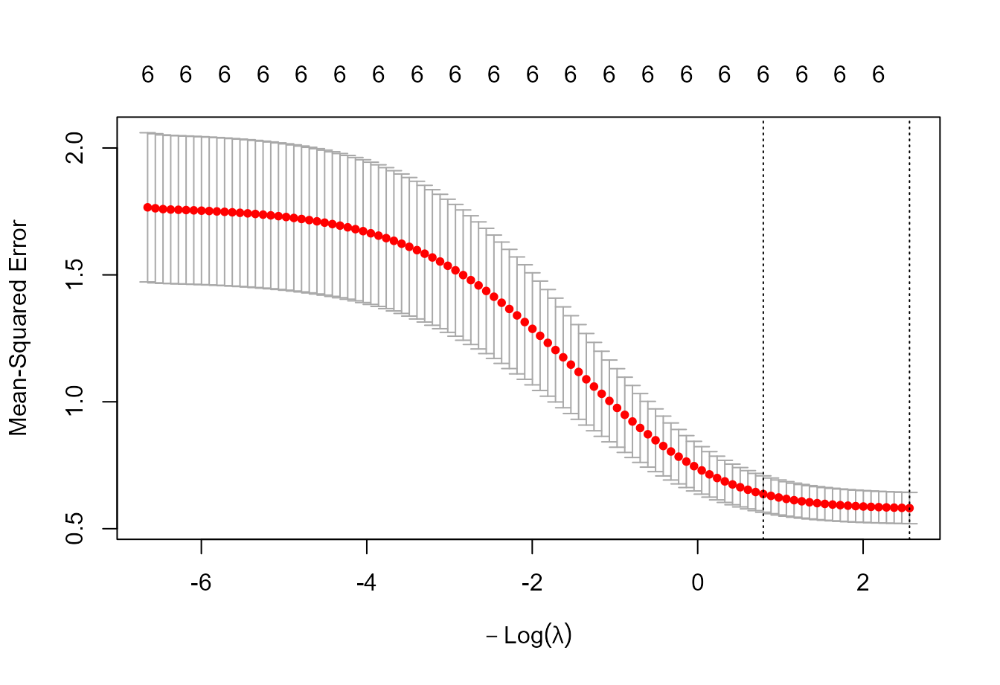

Ridge, lasso and elastic net for agronomic multiple regression
Source:vignettes/v05-regularization.Rmd
v05-regularization.RmdWhy regularize?
Ordinary least squares is unbiased under the classical linear model but can have large sampling variance when predictors are strongly correlated or numerous relative to the available observations. Penalized regression accepts bias in exchange for lower variance and often better prediction.
The package uses glmnet as the computational backend and
keeps regularization separate from confirmatory OLS inference.
Collinear agronomic example
d <- mr_example_data("agronomy_collinear")
fit <- mr_fit(yield_t_ha ~ ., d, goal = "prediction")
mr_collinearity(fit)$VIF
#> term VIF tolerance flag_vif5 flag_vif10
#> 1 N_rate_kg_ha 11.449832 0.08733752 TRUE TRUE
#> 2 N_uptake_kg_ha 8.485220 0.11785198 TRUE FALSE
#> 3 canopy_N_g_m2 1.707740 0.58556922 FALSE FALSE
#> 4 NDVI 3.597993 0.27793270 FALSE FALSE
#> 5 season_rain_mm 1.033892 0.96721862 FALSE FALSE
#> 6 soil_mineral_N_mg_kg 1.024386 0.97619415 FALSE FALSEThe related N-status measurements create a realistic setting in which coefficient stabilization is valuable.
Example 1: ridge regression
if (requireNamespace("glmnet", quietly = TRUE)) {
ridge <- mr_regularize(fit, method = "ridge", nfolds = 5,
lambda = "1se", seed = 101)
ridge$coefficients
ridge$lambda_1se
}
#> [1] 0.4523893Ridge retains all predictors but shrinks their coefficients. This makes it well suited to groups of correlated measurements that all carry information.

Cross-validation curve for ridge regression.
Example 2: lasso
if (requireNamespace("glmnet", quietly = TRUE)) {
lasso <- mr_regularize(fit, method = "lasso", nfolds = 5,
lambda = "1se", seed = 101)
lasso$selected
lasso$coefficients
}
#> lambda.1se
#> (Intercept) 3.481387000
#> N_rate_kg_ha 0.021377170
#> N_uptake_kg_ha 0.000000000
#> canopy_N_g_m2 0.000000000
#> NDVI 0.000000000
#> season_rain_mm 0.003494168
#> soil_mineral_N_mg_kg 0.063029906Lasso performs shrinkage and selection. With highly correlated predictors, the selected member of a group can change under small perturbations of the data. That instability is not a software failure; it reflects limited information for distinguishing predictors that encode similar signals.
Example 3: elastic net
if (requireNamespace("glmnet", quietly = TRUE)) {
enet <- mr_regularize(fit, method = "elastic_net", alpha = 0.5,
nfolds = 5, lambda = "1se", seed = 101)
enet$selected
enet$coefficients
}
#> lambda.1se
#> (Intercept) 3.056501192
#> N_rate_kg_ha 0.016005006
#> N_uptake_kg_ha 0.004635089
#> canopy_N_g_m2 0.001134504
#> NDVI 0.784270005
#> season_rain_mm 0.003646561
#> soil_mineral_N_mg_kg 0.064416101Elastic net often behaves more smoothly than lasso when predictors
occur in correlated groups. The mixing parameter alpha
controls the balance between ridge and lasso penalties.
Lambda minimum versus one-standard-error rule
if (requireNamespace("glmnet", quietly = TRUE)) {
lasso_min <- mr_regularize(fit, "lasso", lambda = "min",
nfolds = 5, seed = 101)
c(lambda_min = lasso_min$lambda_min,
lambda_1se = lasso_min$lambda_1se)
}
#> lambda_min lambda_1se
#> 0.006121043 0.131873880lambda.min minimizes cross-validated loss.
lambda.1se selects a more regularized solution whose
estimated loss is within one standard error of the minimum. The latter
is often useful when parsimony and stability matter.
Soil example
Regularization is not limited to synthetic high-collinearity demonstrations. A soil model with texture, organic matter and CEC can also contain partially redundant information.
soil <- mr_example_data("soil_fertility")
soil_fit <- mr_fit(
yield_t_ha ~ soil_pH + organic_matter_pct + clay_pct + CEC_cmolc_dm3 +
available_P_mg_dm3 + exchangeable_K_mg_dm3 + season_rain_mm,
soil,
goal = "prediction"
)
if (requireNamespace("glmnet", quietly = TRUE)) {
soil_ridge <- mr_regularize(soil_fit, "ridge", nfolds = 5, seed = 22)
soil_lasso <- mr_regularize(soil_fit, "lasso", nfolds = 5, seed = 22)
soil_lasso$selected
}
#> [1] "organic_matter_pct" "available_P_mg_dm3" "exchangeable_K_mg_dm3"
#> [4] "season_rain_mm"Plant-science example
plant <- mr_example_data("plant_growth")
plant_fit <- mr_fit(
biomass_g ~ leaf_area_cm2 + chlorophyll_spad + leaf_N_pct +
stomatal_conductance + plant_height_cm + root_mass_g +
specific_leaf_area_cm2_g,
plant,
goal = "prediction"
)
if (requireNamespace("glmnet", quietly = TRUE)) {
plant_enet <- mr_regularize(plant_fit, "elastic_net", alpha = 0.4,
nfolds = 5, seed = 23)
plant_enet$selected
}
#> [1] "leaf_area_cm2" "chlorophyll_spad" "leaf_N_pct"
#> [4] "stomatal_conductance" "plant_height_cm" "root_mass_g"Coefficient interpretation
Penalized coefficients should not be reported with ordinary OLS standard errors or ordinary OLS p-values. If the scientific goal is coefficient interpretation, use the prespecified OLS model with appropriate covariance estimation and treat regularization as a stability or prediction analysis.
Suggested reporting
Report the standardization behavior of the backend, penalty family, alpha, number of CV folds, random seed, the lambda rule, selected/nonzero terms and an out-of-sample performance summary. For correlated predictor groups, discuss the group structure rather than over-interpreting the identity of a single selected measurement.